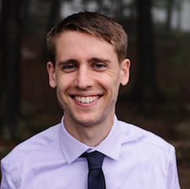

Brian Kirby, Ph.D.
brian.t.kirby4.civ@mail.mil
bkirby1@tulane.edu
Home | Publications
| Google Scholar
- On the experimental feasibility of quantum state reconstruction via machine learning
S. Lohani, T. A. Searles, B. T. Kirby, R. T. Glasser
arXiv:2012.09432
We determine the resource scaling of machine learning-based quantum state reconstruction methods, in terms of both inference and training, for systems of up to four qubits. Further, we examine system performance in the low-count regime, likely to be encountered in the tomography of high-dimensional systems. Finally, we implement our quantum state reconstruction method on a IBM Q quantum computer and confirm our results.
- Machine learning pipeline for quantum state estimation with incomplete measurements
O. Danaci, S. Lohani, B. T. Kirby, R. T. Glasser
arXiv:2012.03104
Two-qubit systems typically employ 36 projective measurements for high-fidelity tomographic estimation. The overcomplete nature of the 36 measurements suggests possible robustness of the estimation procedure to missing measurements. In this paper, we explore the resilience of machine-learning-based quantum state estimation techniques to missing measurements by creating a pipeline of stacked machine learning models for imputation, denoising, and state estimation. When applied to simulated noiseless and noisy projective measurement data for both pure and mixed states, we demonstrate quantum state estimation from partial measurement results that outperforms previously developed machine-learning-based methods in reconstruction fidelity and several conventional methods in terms of resource scaling. Notably, our developed model does not require training a separate model for each missing measurement, making it potentially applicable to quantum state estimation of large quantum systems where preprocessing is computationally infeasible due to the exponential scaling of quantum system dimension.
We build a general quantum state tomography framework that makes use of machine learning techniques to reconstruct quantum states from a given set of coincidence measurements. For a wide range of pure and mixed input states we demonstrate via simulations that our method produces functionally equivalent reconstructed states to that of traditional methods with the added benefit that expensive computations are front-loaded with our system. Further, by training our system with measurement results that include simulated noise sources we are able to demonstrate a significantly enhanced average fidelity when compared to typical reconstruction methods. These enhancements in average fidelity are also shown to persist when we consider state reconstruction from partial tomography data where several measurements are missing. We anticipate that the present results combining the fields of machine intelligence and quantum state estimation will greatly improve and speed up tomography-based quantum experiments.
- Exploring classical correlations in noise to recover quantum information using local filtering
D. E Jones, B. T. Kirby, G. Riccardi, C. Antonelli, and M. Brodsky
New J. Phys. 22 073037 (2020)
A general quantum channel consisting of a decohering and a filtering element carries one qubit of an entangled photon pair. As we apply a local filter to the other qubit, some mutual quantum information between the two qubits is restored depending on the properties of the noise mixed into the signal. We demonstrate a drastic difference between channels with bit-flip and phase-flip noise and further suggest a scheme for maximal recovery of the quantum information.
The entanglement of quantum systems can produce a variety of nonclassical effects that have practical applications in quantum information science. One example of this is nonlocal dispersion cancellation, in which the effects of dispersion on one photon can be cancelled out by the dispersion experienced by a second photon at a distant location. In this paper, we extend the analysis of nonlocal dispersion cancellation to three or more photons. We find that energy-time entanglement of three or more photons can lead to a complete or partial cancellation of dispersion depending on the experimental conditions. These results may be useful in implementing quantum key distribution in networks with three or more nodes.
Polarization dependent loss (PDL) is a serious problem that hinders the transfer of polarization qubits through quantum networks. Recently it has been shown that the detrimental effects of PDL on qubit fidelity can be compensated for with the introduction of an additional passive PDL element that rebalances the polarization modes of the transmitted qubit. This procedure works extremely well when the output of the system is postselected on photon detection. However, in cases where the qubit might be needed for further analysis this procedure introduces unwanted vacuum terms into the state. Here we present procedures for the compensation of the effects of PDL using noiseless amplification and attenuation. Each of these techniques introduces a heralding signal into the correction procedure that significantly reduces the vacuum terms in the final state. When detector inefficiency and dark counts are included in the analysis noiseless amplification remains superior, in terms of the fidelity of the final state, to both noiseless attenuation and passive PDL compensation for detector efficiencies greater than 40%.
- Effect of Polarization Dependent Loss on the Quality of Transmitted Polarization Entanglement
B. T. Kirby, D. E. Jones, and M. Brodsky
J. Lightw. Technol. 37, 95 (2019)
Quantum networking brings together several diverse research areas, such as fiber-optic communication, quantum optics, and quantum information, to achieve capabilities in security, secret sharing, and authentication which are unavailable classically. The development of practical fiber-based quantum networks requires an understanding of the reach, rates, and quality of the entanglement of distributed quantum states. Here, we present a theoretical model describing how the magnitude and orientation of polarization dependent loss (PDL), a common impairment in fiber-optic networks, affects the entanglement quality of distributed quantum states. Furthermore, we theoretically characterize how PDL in one fiber channel can be optimally applied in order to nonlocally compensate for the PDL present in another channel. We present experimental results that verify our theoretical model.
Quantum networks entangle remote nodes by distributing quantum states, which inevitably suffer from decoherence while traversing quantum channels. Pertinent decoherence mechanisms govern the channel capacity, its reach, and the quality and rate of distributed entanglement. Hence recognizing, understanding, and modeling those mechanisms is a crucial step in building quantum networks. Here, we study practical fiber-optic quantum channels that partially filter individual modes of transmitted polarization entangled states and are capable of introducing dephasing. First, we theoretically model and experimentally demonstrate the combined effect of two independent and arbitrarily oriented polarization dependent loss elements experienced by each photon of an entangled photon pair. Then, we showcase the compensation of lost entanglement by properly adjusting the channels' properties and discuss the resulting tradeoff between the entanglement quality and rate. Our results provide insights into the capacity of practical fiber-optics channels, thus taking an important step towards the realization of quantum networks.
A protocol of measuring interferometric visibility function using imperfectly entangled states shared between remote telescopes is proposed. We demonstrate how quantum entanglement can be utilized to increase the baseline size of telescopic arrays thereby providing substantial enhancement to the resolution of direct-detection interferometric measurements. We demonstrate, through a comprehensive analysis, how errors in visibility measurements and in the intensity distribution of a distant object show dependence on the entanglement degree of the shared quantum resource. We analyse the feasibility of the protocol using currently available technology and identify the nature of sources that can benefit most from it.
- Efficient Recurrence Quantum Entanglement Distillation for PMD Channels
Liangzhong Ruan, Brian T. Kirby, Michael Brodsky, and Moe Z. Win
arXiv:1706.07464
Quantum entanglement shared by remote agents serves as a valuable resource for promising applications in distributed computing, cryptography, and sensing. However, distributing entangled states with high fidelity via fiber optic routes is challenging due to the various decoherence mechanisms in fibers. In particular, one of the primary polarization decoherence mechanism in optical fibers is polarization mode dispersion (PMD), which is the distortion of optical pulses by random birefringences in the system. Among quantum entanglement distillation (QED) algorithms proposed to mitigate decoherence, the recurrence QED algorithms require the smallest size of quantum circuits, and are most robust against severe decoherence. On the other hand, the yield of recurrence QED algorithms drops exponentially with respect to the rounds of distillation, and hence it is critical to minimize the required rounds of distillation. We present a recurrence QED algorithm, which is capable of achieving maximum fidelity in every round of distillation when each photonic qubit individually traverses a PMD-degraded channel. The attainment of optimal fidelity in every round of distillation implies that our algorithm reaches the fastest possible convergence speed and hence requires the minimum rounds of distillation. Therefore, the proposed algorithm provides an efficient method to distribute entangled states with high fidelity via optic fibers.
We consider entanglement swapping, a key component of quantum network operations and entanglement distribution. Pure entangled states, which are the desired input to the swapping protocol, are typically mixed by environmental interactions, causing a reduction in their degree of entanglement. Thus an understanding of entanglement swapping with partially mixed states is of importance. Here we present a general analytical solution for entanglement swapping of arbitrary two-qubit states. Our result provides a comprehensive method for analyzing entanglement swapping in quantum networks. First, we show that the concurrence of a partially mixed state is conserved when this state is swapped with a Bell state. Then, we find upper and lower bounds on the concurrence of the state resulting from entanglement swapping for various classes of input states. Finally, we determine a general relationship between the ranks of the initial states and the rank of the final state after swapping.
The use of distributed amplifiers may have some potential advantages for the transmission of quantum information through optical fibers. In addition to the quantum noise introduced by the amplifiers, entanglement between atoms in the amplifying media and the optical field corresponds to which-path information that can further reduce the coherence. Here we analyze the effects of decoherence in a phase-insensitive distributed amplifier by using perturbation theory to calculate the state of the entire system including the atomic media. For an initial coherent state, tracing over the atomic states allows the reduced density matrix of the field to be expressed as a mixture of squeezed states with a reduced spread in photon number and an increased phase uncertainty. The amplifier noise and decoherence can be interpreted as being due to entanglement with the environment rather than the amplification of vacuum fluctuation noise. In addition to providing increased insight into the effects of decoherence, these results can be applied to nonclassical superposition states such as Schrodinger cats.
Cross-phase modulation at the single-photon level has a wide variety of fundamental applications in quantum optics including the generation of macroscopic entangled states. Here we describe a practical method for producing a weak cross-phase modulation at the single-photon level using metastable xenon in a high finesse cavity. We estimate the achievable phase shift and give a brief update on the experimental progress towards its realization. A single-photon cross-phase modulation of approximately 20 milliradians is predicted by both a straightforward perturbation theory calculation and a numerical matrix diagonalization method.
The propagation of macroscopic entangled states over large distances in the presence of loss is of fundamental interest and may have practical applications as well. Here we describe two different techniques in which state discrimination can be used to violate Bell's inequality with macroscopic phase-entangled coherent states. We find that Bell's inequality can be violated by these macroscopic states over a distance of approximately 400 km in commercially-available optical fibers.
A method for performing nonlocal interferometry using phase-entangled macroscopic coherent states is described. The required entanglement can be generated using weak nonlinearities while Bell's inequality can be violated using single photons as a probe. The entanglement is relatively robust against photon loss and Bell's inequality can be violated over a relatively large distance in optical fibers despite the fact that a large number of photons are absorbed in the process.
{kind=link}